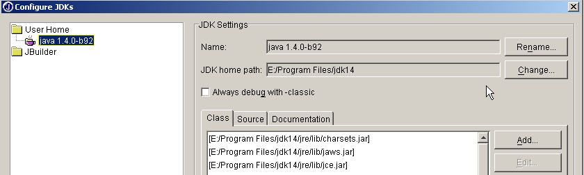
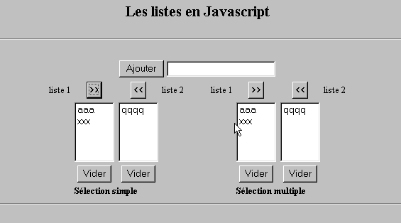

8. Appendici
8.1. Strumenti di sviluppo web
Qui indichiamo dove trovare e come installare gli strumenti necessari per lo sviluppo web. Alcune versioni degli strumenti sono state aggiornate ed è possibile che le spiegazioni fornite qui non siano più valide per le versioni più recenti. Il lettore dovrà quindi adattarsi... Nel corso di programmazione web utilizzeremo principalmente i seguenti strumenti, tutti disponibili gratuitamente:
- un browser recente in grado di visualizzare XML. Gli esempi del corso sono stati testati con Internet Explorer 6.
- Un JDK (Java Development Kit) recente. Gli esempi di questo corso sono stati testati con JDK 1.4. Questo JDK include il plug-in per browser Java 1.4, che consente ai browser di visualizzare le applet Java utilizzando JDK 1.4.
- Un ambiente di sviluppo Java per la scrittura di servlet Java. In questo caso, si tratta di JBuilder 7.
- Server web: Apache, PWS (Personal Web Server), Tomcat.
- Apache verrà utilizzato per lo sviluppo di applicazioni web in PERL (Practical Extracting and Reporting Language) o PHP (Personal Home Page)
- PWS verrà utilizzato per lo sviluppo di applicazioni web in ASP (Active Server Pages) o PHP
- Tomcat verrà utilizzato per lo sviluppo di applicazioni web utilizzando servlet Java o JSP (Java Server Pages)
- Un'applicazione di gestione del database: MySQL
- EasyPHP: uno strumento che integra il server web Apache, il linguaggio PHP e il DBMS MySQL
8.1.1. Server web, browser, linguaggi di scripting
- Principali server web
- Apache (Linux, Windows)
- Internet Information Server (IIS) (NT), Personal Web Server (PWS) (Windows 9x)
- Principali browser
- Internet Explorer (Windows)
- Netscape (Linux, Windows)
- Linguaggi di scripting lato server
- VBScript (IIS, PWS)
- JavaScript (IIS, PWS)
- Perl (Apache, IIS, PWS)
- PHP (Apache, IIS, PWS)
- Java (Apache, Tomcat)
- Linguaggi .NET
- Linguaggi di scripting lato client
- VBScript (IE)
- JavaScript (IE, Netscape)
- PerlScript (IE)
- Java (IE, Netscape)
8.1.2. Dove trovare gli strumenti
http://www.netscape.com/ (link per il download) | |
http://www.microsoft.com/windows/ie/default.asp | |
http://www.php.net http://www.php.net/downloads.php (Binari Windows) | |
http://www.activestate.com http://www.activestate.com/Products/ http://www.activestate.com/Products/ActivePerl/ | |
http://msdn.microsoft.com/scripting (seguire il link Windows Script) | |
http://java.sun.com/ http://java.sun.com/downloads.html (JSE) http://java.sun.com/j2se/1.4/download.html | |
http://www.apache.org/ http://www.apache.org/dist/httpd/binaries/win32/ | |
incluso nell'Option Pack NT 4.0 per Windows 95 incluso nel CD di Windows 98 http://www.microsoft.com/ntserver/nts/downloads/recommended/NT4OptPk/win95.asp | |
http://www.microsoft.com | |
http://jakarta.apache.org/tomcat/ | |
http://www.borland.com/jbuilder/ http://www.borland.com/products/downloads/download_jbuilder.html | |
http://www.easyphp.org/ http://www.easyphp.org/telechargements.php3 |
8.1.3. EasyPHP
Questa applicazione è molto comoda perché include quanto segue in un unico pacchetto:
- il server Web Apache (1.3.x)
- il linguaggio PHP (4.x)
- il DBMS MySQL (3.23.x)
- uno strumento di amministrazione MySQL: PhpMyAdmin
L'applicazione di installazione si presenta così:

L'installazione di EasyPHP è semplice e nel file system viene creata una struttura di directory:

il file eseguibile dell'applicazione | |
la struttura delle directory del server Apache | |
la directory del database MySQL | |
la struttura delle directory dell'applicazione phpMyAdmin | |
la struttura delle directory di PHP | |
radice dell'albero delle directory per le pagine web servite dal server Apache di EasyPHP | |
directory in cui è possibile inserire gli script CGI per il server Apache |
Il vantaggio principale di EasyPHP è che l'applicazione è preconfigurata. Pertanto, Apache, PHP e MySQL sono già configurati per funzionare insieme. Quando si avvia EasyPHP tramite il collegamento nel menu Programmi, nell'angolo in basso a destra dello schermo compare un'icona.
 |
Si tratta della lettera E con un puntino rosso, che dovrebbe lampeggiare se il server web Apache e il database MySQL sono operativi. Cliccandoci sopra con il tasto destro del mouse, si accede alle opzioni del menu:

L'opzione Amministrazione consente di configurare le impostazioni ed eseguire test di funzionalità:

8.1.3.1. Amministrazione PHP
Il pulsante Informazioni PHP dovrebbe consentire di verificare che la combinazione Apache-PHP funzioni correttamente: dovrebbe apparire una pagina di informazioni su PHP:

Il pulsante "Extensions" mostra un elenco delle estensioni PHP installate. Si tratta in realtà di librerie di funzioni.

La schermata sopra mostra, ad esempio, che sono presenti le funzioni necessarie per utilizzare il database MySQL.
Il pulsante "Impostazioni" mostra il nome utente e la password dell'amministratore del database MySQL.

L'utilizzo del database MySQL esula dall'ambito di questa rapida panoramica, ma è chiaro che è necessario impostare una password per l'amministratore del database.
8.1.3.2. Amministrazione di Apache
Sempre nella pagina di amministrazione di EasyPHP, il link "I tuoi alias" consente di definire alias associati a una directory. Ciò permette di collocare pagine web al di fuori della directory www nella struttura di directory di EasyPHP.

Se si inseriscono le seguenti informazioni nella pagina sopra riportata:

e clicchi sul pulsante "Convalida", le seguenti righe vengono aggiunte al file <easyphp>\apache\conf\httpd.conf:
Alias /st/ "e:/data/serge/web/"
<Directory "e:/data/serge/web">
Options FollowSymLinks Indexes
AllowOverride None
Order deny,allow
allow from 127.0.0.1
deny from all
</Directory>
<easyphp> si riferisce alla directory di installazione di EasyPHP. httpd.conf è il file di configurazione del server Apache. È quindi possibile ottenere lo stesso risultato modificando direttamente questo file. Le modifiche al file httpd.conf vengono normalmente applicate immediatamente da Apache. Se così non fosse, sarà necessario arrestare e riavviare il server, utilizzando l'icona di EasyPHP:
Per concludere il nostro esempio, ora possiamo inserire le pagine web nella struttura di directory e:\data\serge\web:
e richiedere questa pagina utilizzando l'alias st:

In questo esempio, il server Apache è stato configurato per funzionare sulla porta 81. La sua porta predefinita è 80. Ciò è controllato dalla seguente riga nel file httpd.conf che abbiamo già visto:
8.1.3.3. Il file di configurazione di Apache htpd.conf
Quando si desidera ottimizzare Apache, è necessario modificare manualmente il file di configurazione httpd.conf, che si trova nella cartella <easyphp>\apache\conf:

Ecco alcuni punti chiave da tenere in considerazione in questo file di configurazione:
ruolo | |
specifica la cartella contenente l'albero di directory di Apache | |
specifica quale porta utilizzerà il server web. In genere, è la 80. Modificando questa riga, è possibile far funzionare il server web su una porta diversa | |
l'indirizzo e-mail dell'amministratore del server Apache | |
il nome della macchina su cui è in esecuzione il server Apache | |
la directory di installazione del server Apache. Quando nel file di configurazione compaiono nomi di file relativi, essi sono relativi a questa directory. | |
la directory principale dell'albero delle pagine web servite dal server. In questo caso, l'URL http://machine/rep1/fic1.html corrisponderà al file E:\Program Files\EasyPHP\www\rep1\fic1.html | |
imposta le proprietà della cartella precedente | |
cartella logs, quindi in pratica <ServerRoot>\logs\error.log: E:\Program Files\EasyPHP\apache\logs\error.log. Questo è il file da controllare se si riscontra che il server Apache non funziona. | |
E:\Program Files\EasyPHP\cgi-bin sarà la radice dell'albero di directory in cui è possibile collocare gli script CGI. Pertanto, l'URL http://machine/cgi-bin/rep1/script1.pl sarà l'URL dello script CGI E:\Program Files\EasyPHP\cgi-bin\rep1\script1.pl. | |
imposta le proprietà della cartella sopra indicata | |
Righe per il caricamento dei moduli che consentono ad Apache di funzionare con PHP4. | |
imposta le estensioni dei file da trattare come file PHP |
8.1.3.4. Amministrazione di MySQL con PhpMyAdmin
Nella pagina di amministrazione di EasyPHP, fare clic sul pulsante PhpMyAdmin:

L'elenco a discesa sotto Home consente di visualizzare il . |  |
Il numero tra parentesi indica il numero di tabelle. Se selezionate un database, vengono visualizzate le relative tabelle: |  |
La pagina web offre una serie di operazioni sul database:

Se clicchi sul link Visualizza utente:

Qui c'è un solo utente: root, che è l'amministratore di MySQL. Seguendo il link Modifica, è possibile modificare la sua password, che al momento è vuota — una pratica sconsigliata per un amministratore.
Non diremo altro su phpMyAdmin, un programma ricco di funzionalità che meriterebbe una discussione di diverse pagine.
8.1.4. PHP
Abbiamo visto come ottenere PHP tramite l'applicazione EasyPHP. Per ottenere PHP direttamente, vai al sito web http://www.php.net.
PHP non si limita all'uso web. È possibile utilizzarlo come linguaggio di scripting su Windows. Crea il seguente script e salvalo come date.php:
<?
// script php affichant l'heure
$maintenant=date("j/m/y, H:i:s",time());
echo "Nous sommes le $maintenant";
?>
In una finestra DOS, accedi alla directory che contiene il file date.php ed eseguilo:
E:\data\serge\php\essais>"e:\program files\easyphp\php\php.exe" date.php
X-Powered-By: PHP/4.2.0
Content-type: text/html
Nous sommes le 18/07/02, 09:31:01
8.1.5. PERL
È preferibile che Internet Explorer sia già installato. Se è presente, Active Perl lo configurerà per accettare script PERL nelle pagine HTML, script che saranno eseguiti da IE stesso sul lato client. Il sito web di Active Perl si trova all'URL http://www.activestate.comA installazione, PERL verrà installato in una directory che chiameremo <perl>. Contiene la seguente struttura di directory:
DEISL1 ISU 32 403 23/06/00 17:16 DeIsL1.isu
BIN <REP> 23/06/00 17:15 bin
LIB <REP> 23/06/00 17:15 lib
HTML <REP> 23/06/00 17:15 html
EG <REP> 23/06/00 17:15 eg
SITE <REP> 23/06/00 17:15 site
HTMLHELP <REP> 28/06/00 18:37 htmlhelp
L'eseguibile perl.exe si trova in <perl>\bin. Perl è un linguaggio di scripting che funziona su Windows e Unix. Viene utilizzato anche nella programmazione web. Scriviamo il nostro primo script:
# script PERL affichant l'heure
# modules
use strict;
# programme
my ($secondes,$minutes,$heure)=localtime(time);
print "Il est $heure:$minutes:$secondes\n";
Salva questo script in un file chiamato heure.pl. Apri una finestra DOS, vai alla directory che contiene lo script ed eseguilo:
8.1.6. VBScript, JavaScript, PerlScript
Questi sono linguaggi di scripting per Windows. Possono essere eseguiti in vari ambienti, come
- Windows Scripting Host per l’uso diretto in Windows, in particolare per la scrittura di script di amministrazione di sistema
- Internet Explorer. Viene quindi utilizzato all’interno delle pagine HTML, alle quali aggiunge un livello di interattività che non può essere ottenuto con il solo HTML.
- Internet Information Server (IIS), il server web di Microsoft su NT/2000, e il suo equivalente, Personal Web Server (PWS), su Win9x. In questo caso, VBScript viene utilizzato per la programmazione web lato server, una tecnologia denominata ASP (Active Server Pages) da Microsoft.
Scaricare il file di installazione dall'URL: http://msdn.microsoft.com/scripting e seguire i collegamenti relativi a Windows Script. Verranno installati i seguenti componenti:
- il contenitore Windows Scripting Host, che supporta vari linguaggi di scripting come VBScript e JavaScript, oltre ad altri come PerlScript, incluso in Active Perl.
- un interprete VBScript
- un interprete JavaScript
Facciamo qualche prova veloce. Creiamo il seguente programma VBScript:
' a class
class personne
Dim nom
Dim age
End class
' creation of a person object
Set p1=new personne
With p1
.nom="dupont"
.age=18
End With
' display properties person p1
With p1
wscript.echo "nom=" & .nom
wscript.echo "age=" & .age
End With
Questo programma utilizza oggetti. Chiamiamolo objects.vbs (l'estensione .vbs indica un file VBScript). Accedete alla directory in cui si trova ed eseguite il programma:
E:\data\serge\windowsScripting\vbscript\poly\objets>cscript objets.vbs
Microsoft (R) Windows Script Host Version 5.6
Copyright (C) Microsoft Corporation 1996-2001. All rights reserved.
nom=dupont
age=18
Ora creiamo il seguente programma JavaScript che utilizza gli array:
// tableau dans un variant
// tableau vide
tableau=new Array();
affiche(tableau);
// tableau croît dynamiquement
for(i=0;i<3;i++){
tableau.push(i*10);
}
// affichage tableau
affiche(tableau);
// encore
for(i=3;i<6;i++){
tableau.push(i*10);
}
affiche(tableau);
// tableaux à plusieurs dimensions
WScript.echo("-----------------------------");
tableau2=new Array();
for(i=0;i<3;i++){
tableau2.push(new Array());
for(j=0;j<4;j++){
tableau2[i].push(i*10+j);
}//for j
}// for i
affiche2(tableau2);
// fin
WScript.quit(0);
// ---------------------------------------------------------
function affiche(tableau){
// affichage tableau
for(i=0;i<tableau.length;i++){
WScript.echo("tableau[" + i + "]=" + tableau[i]);
}//for
}//function
// ---------------------------------------------------------
function affiche2(tableau){
// affichage tableau
for(i=0;i<tableau.length;i++){
for(j=0;j<tableau[i].length;j++){
WScript.echo("tableau[" + i + "," + j + "]=" + tableau[i][j]);
}// for j
}//for i
}//function
Questo programma utilizza gli array. Chiamiamolo arrays.js (il suffisso .js indica un file JavaScript). Accedete alla directory in cui si trova ed eseguite il programma:
E:\data\serge\windowsScripting\javascript\poly\tableaux>cscript tableaux.js
Microsoft (R) Windows Script Host Version 5.6
Copyright (C) Microsoft Corporation 1996-2001. Tous droits réservés.
tableau[0]=0
tableau[1]=10
tableau[2]=20
tableau[0]=0
tableau[1]=10
tableau[2]=20
tableau[3]=30
tableau[4]=40
tableau[5]=50
-----------------------------
tableau[0,0]=0
tableau[0,1]=1
tableau[0,2]=2
tableau[0,3]=3
tableau[1,0]=10
tableau[1,1]=11
tableau[1,2]=12
tableau[1,3]=13
tableau[2,0]=20
tableau[2,1]=21
tableau[2,2]=22
tableau[2,3]=23
Un ultimo esempio in PerlScript per concludere. Per accedere a PerlScript è necessario avere Active Perl installato.
<job id="PERL1">
<script language="PerlScript">
# du Perl classique
%dico=("maurice"=>"juliette","philippe"=>"marianne");
@cles= keys %dico;
for ($i=0;$i<=$#cles;$i++){
$cle=$cles[$i];
$valeur=$dico{$cle};
$WScript->echo ("clé=".$cle.", valeur=".$valeur);
}
# du perlscript utilisant les objets Windows Script
$dico=$WScript->CreateObject("Scripting.Dictionary");
$dico->add("maurice","juliette");
$dico->add("philippe","marianne");
$WScript->echo($dico->item("maurice"));
$WScript->echo($dico->item("philippe"));
</script>
</job>
Questo programma mostra la creazione e l'uso di due dizionari: uno nello stile classico di Perl, l'altro utilizzando l'oggetto Windows Script Scripting Dictionary. Salviamo questo codice nel file dico.wsf (wsf è l'estensione dei file Windows Script). Accediamo alla cartella del programma ed eseguiamolo:
E:\data\serge\windowsScripting\perlscript\essais>cscript dico.wsf
Microsoft (R) Windows Script Host Version 5.6
Copyright (C) Microsoft Corporation 1996-2001. Tous droits réservés.
clé=philippe, valeur=marianne
clé=maurice, valeur=juliette
juliette
marianne
PerlScript può utilizzare oggetti provenienti dal contenitore in cui viene eseguito. In questo caso, si trattava di oggetti provenienti dal contenitore Windows Script. Nel contesto della programmazione web, gli script VBScript, JavaScript e PerlScript possono essere eseguiti sia all'interno del browser IE che su un server PWS o IIS. Se lo script è piuttosto complesso, potrebbe essere opportuno testarlo al di fuori del contesto web, all'interno del contenitore Windows Script come visto in precedenza. In questo modo, è possibile testare solo le funzioni dello script che non utilizzano oggetti specifici del browser o del server. Anche con questa limitazione, questa opzione rimane utile perché in genere è piuttosto impraticabile eseguire il debug di script in esecuzione all'interno di server web o browser.
8.1.7. JAVA
Java è disponibile all'URL: http://www.sun.com ed è installato in una struttura di directory denominata <java> che contiene i seguenti elementi:
22/05/2002 05:51 <DIR> .
22/05/2002 05:51 <DIR> ..
22/05/2002 05:51 <DIR> bin
22/05/2002 05:51 <DIR> jre
07/02/2002 12:52 8 277 README.txt
07/02/2002 12:52 13 853 LICENSE
07/02/2002 12:52 4 516 COPYRIGHT
07/02/2002 12:52 15 290 readme.html
22/05/2002 05:51 <DIR> lib
22/05/2002 05:51 <DIR> include
22/05/2002 05:51 <DIR> demo
07/02/2002 12:52 10 377 848 src.zip
11/02/2002 12:55 <DIR> docs
Nella directory bin troverete javac.exe, il compilatore Java, e java.exe, la Java Virtual Machine. Potete eseguire i seguenti test:
- Scrivere il seguente script:
//java program displaying the time
import java.io.*;
import java.util.*;
public class heure{
public static void main(String arg[]){
// retrieve date & time
Date maintenant=new Date();
// we display
System.out.println("Il est "+maintenant.getHours()+
":"+maintenant.getMinutes()+":"+maintenant.getSeconds());
}//hand
}//class
- Salva questo programma come heure.java. Apri una finestra DOS. Vai alla directory contenente il file heure.java e compilalo:
D:\data\java\essais>c:\jdk1.3\bin\javac heure.java
Note: heure.java uses or overrides a deprecated API.
Note: Recompile with -deprecation for details.
Nel comando sopra riportato, c:\jdk1.3\bin\javac deve essere sostituito con il percorso esatto del compilatore javac.exe. Ora dovresti avere un file denominato heure.class nella stessa directory di heure.java; questo è il programma che verrà ora eseguito dalla macchina virtuale java.exe.
- Esegui il programma:
8.1.8. Server Apache
Abbiamo visto che il server Apache può essere ottenuto tramite l'applicazione EasyPHP. Per scaricarlo direttamente, vai al sito web di Apache: http://www.apache.org. L'installazione crea una struttura di directory contenente tutti i file necessari per il server. Chiamiamo questa directory <apache>. Contiene una struttura di directory simile alla seguente:
UNINST ISU 118 805 23/06/00 17:09 Uninst.isu
HTDOCS <REP> 23/06/00 17:09 htdocs
APACHE~1 DLL 299 008 25/02/00 21:11 ApacheCore.dll
ANNOUN~1 3 000 23/02/00 16:51 Announcement
ABOUT_~1 13 197 31/03/99 18:42 ABOUT_APACHE
APACHE EXE 20 480 25/02/00 21:04 Apache.exe
KEYS 36 437 20/08/99 11:57 KEYS
LICENSE 2 907 01/01/99 13:04 LICENSE
MAKEFI~1 TMP 27 370 11/01/00 13:47 Makefile.tmpl
README 2 109 01/04/98 6:59 README
README NT 3 223 19/03/99 9:55 README.NT
WARNIN~1 TXT 339 21/09/98 13:09 WARNING-NT.TXT
BIN <REP> 23/06/00 17:09 bin
MODULES <REP> 23/06/00 17:09 modules
ICONS <REP> 23/06/00 17:09 icons
LOGS <REP> 23/06/00 17:09 logs
CONF <REP> 23/06/00 17:09 conf
CGI-BIN <REP> 23/06/00 17:09 cgi-bin
PROXY <REP> 23/06/00 17:09 proxy
INSTALL LOG 3 779 23/06/00 17:09 install.log
Directory dei file di configurazione di Apache | |
Directory dei file di log di Apache (monitoraggio) | |
Esecutibili di Apache |
8.1.8.1. Configurazione
Nella directory <Apache>\conf troverete i seguenti file: httpd.conf, srm.conf, access.conf. Nelle ultime versioni di Apache, questi tre file sono stati uniti in httpd.conf. Abbiamo già trattato i punti chiave di questo file di configurazione. Negli esempi seguenti, per i test è stata utilizzata la versione Apache di EasyPHP e, di conseguenza, il relativo file di configurazione. In questo file, DocumentRoot, che indica la radice dell'albero delle directory delle pagine web, è e:\program files\easyphp\www.
8.1.8.2. PHP - Collegamento Apache
Per effettuare un test, creare il file intro.php con la seguente singola riga:
<? phpinfo() ?>
e inseriscilo nella directory principale delle pagine web del server Apache (DocumentRoot sopra). Richiedi l'URL http://localhost/intro.php. Dovresti vedere un elenco di informazioni su PHP:

Il seguente script PHP visualizza l'ora. Lo abbiamo già visto in precedenza:
<?php
// time: number of milliseconds since 01/01/1970
// "date-time display format
// d: 2-digit day
// m: 2-digit month
// y: 2-digit year
// H: hour 0.23
// i : minutes
// s: seconds
print "Nous sommes le " . date("d/m/y H:i:s",time());
?>
Metti questo file di testo nella directory principale del server Apache (DocumentRoot) e chiamalo date.php. Apri un browser e inserisci l'URL http://localhost/date.php. Vedrai la seguente pagina:

8.1.8.3. Collegamento PERL-APACHE
Ciò si ottiene utilizzando una riga del tipo: ScriptAlias /cgi-bin/ "E:/Program Files/EasyPHP/cgi-bin/" nel file <apache>\conf\httpd.conf. La sintassi è ScriptAlias /cgi-bin/ "<cgi-bin>" dove <cgi-bin> è la cartella in cui possono essere collocati gli script CGI. CGI (Common Gateway Interface) è uno standard per la comunicazione tra il server web e le applicazioni. Un client richiede una pagina dinamica al server web, ovvero una pagina generata da un programma. Il server web deve quindi istruire un programma affinché generi la pagina. Il CGI definisce l’interazione tra il server e il programma, in particolare il modo in cui le informazioni vengono trasmesse tra queste due entità.
Se necessario, modificare la riga ScriptAlias /cgi-bin/ "<cgi-bin>" e riavviare il server Apache. Quindi eseguire il seguente test:
- Scrivere lo script:
#!c:\perl\bin\perl.exe
# script PERL affichant l'heure
# modules
use strict;
# programme
my ($secondes,$minutes,$heure)=localtime(time);
print <<FINHTML
Content-Type: text/html
<html>
<head>
<title>heure</title>
</head>
<body>
<h1>Il est $heure:$minutes:$secondes</h1>
</body>
FINHTML
;
- Inserisci questo script in <cgi-bin>\heure.pl, dove <cgi-bin> è la directory in grado di ricevere script CGI (vedi httpd.conf). La prima riga, #!c:\perl\bin\perl.exe, specifica il percorso dell'eseguibile perl.exe. Modificalo se necessario.
- Avvia Apache se non l'hai già fatto
- Richiedi l'URL http://localhost/cgi-bin/heure.pl in un browser. Verrà visualizzata la seguente pagina:

8.1.9. Il server PWS
8.1.9.1. Installazione
Il PWS (Personal Web Server) è una versione personale dell'IIS (Internet Information Server) di Microsoft. L'IIS è disponibile sui computer con sistema operativo NT e 2000. Sui computer Win9x, PWS è normalmente incluso nel pacchetto di installazione di Internet Explorer. Tuttavia, non viene installato per impostazione predefinita. È necessario eseguire un'installazione personalizzata di IE e richiedere l'installazione di PWS. È disponibile anche nell'Option Pack NT 4.0 per Windows 95.
8.1.9.2. Test iniziali
La directory principale per le pagine web PWS è drive:\inetpub\wwwroot, dove drive è il disco su cui è stato installato PWS. Di seguito si supporrà che tale unità sia D. Pertanto, l'URL http://machine/rep1/page1.html corrisponde al file d:\inetpub\wwwroot\rep1\page1.html. Il server PWS interpreta qualsiasi file con estensione .asp (Active Server Pages) come uno script che deve eseguire per generare una pagina HTML.
PWS funziona sulla porta 80 per impostazione predefinita. Anche il server web Apache... È quindi necessario arrestare Apache per lavorare con PWS se si dispone di entrambi i server. L'altra soluzione è configurare Apache per funzionare su una porta diversa. Nel file di configurazione di Apache httpd.conf, sostituisci la riga Port 80</mark> con Port 81</mark>. Apache ora funzionerà sulla porta 81 e potrà essere utilizzato contemporaneamente a PWS. Se PWS è in esecuzione e richiedi l'URL http://localhost, vedrai una pagina simile alla seguente:

8.1.9.3. PHP - Collegamento PWS
- Di seguito è riportato un file .reg per la modifica del registro. Fare doppio clic su questo file per modificare il registro. In questo caso, la DLL richiesta si trova in d:\php4 insieme all'eseguibile PHP. Modificare secondo necessità. Le barre rovesciate (\) devono essere raddoppiate nel percorso della DLL.
REGEDIT4
[HKEY_LOCAL_MACHINE\SYSTEM\CurrentControlSet\Services\w3svc\parameters\Script Map]
".php"="d:\\php4\\php4isapi.dll"
- Riavvia il computer affinché la modifica al registro abbia effetto.
- Creare una cartella "php" in d:\inetpub\wwwroot, che è la radice del server PWS. Una volta fatto, aprire PWS e andare alla scheda "Avanzate". Fare clic sul pulsante "Aggiungi" per creare una directory virtuale:
- Confermare le impostazioni e riavviare PWS. Inserire il file intro.php in d:\inetpub\wwwroot\php, contenente solo la seguente riga:
- Richiedi l'URL http://localhost/php/intro.php dal server PWS. Dovresti vedere l'elenco delle informazioni PHP già visualizzate con Apache.
8.1.10. Tomcat: servlet Java e JSP (Java Server Pages)
Tomcat è un server web che genera pagine HTML utilizzando servlet (programmi Java eseguiti dal server web) o JSP (Java Server Pages), che combinano codice Java con codice HTML. È l'equivalente delle ASP (Active Server Pages) sul server IIS/PWS di Microsoft, dove il codice VBScript o JavaScript viene combinato con il codice HTML.
8.1.10.1. Installazione
Tomcat è disponibile all'URL: http://jakarta.apache.org. Si scaricherà un file di installazione .exe. Quando si esegue questo programma, viene prima richiesto di selezionare quale JDK utilizzare. Questo perché Tomcat richiede un JDK per installarsi e successivamente per compilare ed eseguire i servlet Java. È quindi necessario avere un JDK Java installato prima di installare Tomcat. Si consiglia di utilizzare il JDK più recente. L'installazione creerà una struttura di directory <tomcat>:

che consiste semplicemente nell'estrarre questo archivio in una directory. Scegli una directory il cui percorso contenga solo nomi senza spazi (non, ad esempio, "Programmi"), poiché esiste un bug nel processo di installazione di Tomcat. Utilizza, ad esempio, C:\tomcat o D:\tomcat. Chiamiamo questa directory <tomcat>. Al suo interno troverai una cartella denominata jakarta-tomcat e, all'interno di tale cartella, la seguente struttura di directory:
LOGS <REP> 15/11/00 9:04 logs
LICENSE 2 876 18/04/00 15:56 LICENSE
CONF <REP> 15/11/00 8:53 conf
DOC <REP> 15/11/00 8:53 doc
LIB <REP> 15/11/00 8:53 lib
SRC <REP> 15/11/00 8:53 src
WEBAPPS <REP> 15/11/00 8:53 webapps
BIN <REP> 15/11/00 8:53 bin
WORK <REP> 15/11/00 9:04 work
8.1.10.2. Avvio/Arresto del server Web Tomcat
Tomcat è un server Web, proprio come Apache o PWS. Per avviarlo, utilizzare i collegamenti nel menu Programmi:
per avviare Tomcat | |
per arrestarlo |
Quando avvii Tomcat, appare una finestra DOS con il seguente contenuto:

È possibile ridurre a icona questa finestra DOS. Rimarrà aperta finché Tomcat sarà in esecuzione. È quindi possibile procedere con i primi test. Il server web Tomcat è in esecuzione sulla porta 8080. Una volta avviato Tomcat, aprire un browser web e digitare l'URL http://localhost:8080. Dovrebbe apparire la seguente pagina:

Seguire il link Esempi di Servlet:

Fai clic sul link "Esegui" per RequestParameters, poi su quello per Source. Avrai così un primo assaggio di cosa sia un servlet Java. Puoi fare lo stesso con i link presenti nelle pagine JSP.
Per arrestare Tomcat, utilizzare il collegamento "Stop Tomcat" nel menu "Programmi".
8.1.11. JBuilder
JBuilder è un ambiente di sviluppo per applicazioni Java. Per creare servlet Java senza interfacce grafiche, un ambiente di questo tipo non è strettamente necessario. Sono sufficienti un editor di testo e un JDK. Tuttavia, JBuilder offre alcuni vantaggi rispetto al metodo precedente:
- facilità di debug: il compilatore evidenzia le righe errate in un programma ed è facile raggiungerle
- completamento del codice: quando si utilizza un oggetto Java, JBuilder visualizza un elenco delle sue proprietà e dei suoi metodi direttamente nel codice. Ciò è molto utile, dato che la maggior parte degli oggetti Java ha numerose proprietà e metodi difficili da ricordare.
JBuilder è disponibile all'indirizzo http://www.borland.com/jbuilder. Per ottenere il software è necessario compilare un modulo. Una chiave di attivazione viene inviata via e-mail. Per installare JBuilder 7, ad esempio, sono stati seguiti i seguenti passaggi:
- Sono stati scaricati tre file ZIP: uno per l'applicazione, uno per la documentazione e uno per gli esempi. Ciascuno di questi file ZIP ha un link separato sul sito web di JBuilder.
- Per prima cosa è stata installata l'applicazione, poi la documentazione e infine gli esempi
- Quando si avvia l'applicazione per la prima volta, viene richiesta una chiave di attivazione: si tratta di quella che è stata inviata via e-mail. Nella versione 7, questa chiave è in realtà un intero file di testo che può essere inserito, ad esempio, nella cartella di installazione di JB7. Quando viene richiesta la chiave, è sufficiente specificare il file in questione. Una volta fatto questo, la chiave non verrà più richiesta.
Ci sono alcune configurazioni utili da impostare se si desidera utilizzare JBuilder per creare servlet Java. La cosiddetta versione "Personal" di JBuilder è una versione ridotta che non include tutte le classi necessarie per lo sviluppo web Java. È possibile configurare JBuilder per utilizzare le librerie di classi fornite da Tomcat. Ecco come:
- Avviare JBuilder

- abilitare l'opzione Strumenti/Configura JDK

Nella sezione Impostazioni JDK sopra riportata, il campo Nome visualizza in genere "JDK 1.3.1". Se si dispone di un JDK più recente, utilizzare il pulsante Modifica per specificarne la directory di installazione. Nell'esempio sopra riportato, abbiamo specificato la directory E:\Program Files\jdk14, dove è stato installato un JDK 1.4. D'ora in poi, JBuilder utilizzerà questo JDK per le compilazioni e le esecuzioni. Nella sezione (Class, Source, Documentation), vedrai un elenco di tutte le librerie di classi che JBuilder analizzerà: in questo caso, le classi del JDK 1.4. Le classi incluse in questo JDK non sono sufficienti per lo sviluppo web Java. Per aggiungere altre librerie di classi, usa il pulsante Add e specifica i file .jar aggiuntivi che desideri utilizzare. I file .jar sono librerie di classi. Tomcat 4.x include tutte le librerie di classi necessarie per lo sviluppo web. Si trovano in <tomcat>\common\lib, dove <tomcat> è la directory di installazione di Tomcat:

Utilizzando il pulsante Aggiungi, aggiungeremo queste librerie, una per una, all'elenco delle librerie analizzate da JBuilder:

D'ora in poi, potrete compilare programmi Java conformi allo standard J2EE, inclusi i servlet Java. JBuilder viene utilizzato solo per la compilazione; l'esecuzione viene successivamente gestita da Tomcat secondo le procedure illustrate nel corso.
8.2. Codice sorgente del programma
8.2.1. Il client TCP generico
Molti servizi creati agli albori di Internet funzionano secondo il modello del server echo studiato in precedenza: la comunicazione client-server avviene tramite lo scambio di righe di testo. Scriveremo un client TCP generico che verrà avviato come segue: java cltTCPgenerique server port
Questo client TCP si connetterà alla porta port sul server server. Una volta connesso, creerà due thread:
- un thread responsabile della lettura dei comandi digitati sulla tastiera e del loro invio al server
- un thread responsabile della lettura delle risposte del server e della loro visualizzazione sullo schermo
Perché due thread? Ogni servizio TCP-IP ha un proprio protocollo specifico e talvolta si verificano le seguenti situazioni:
- il client deve inviare diverse righe di testo prima di ricevere una risposta
- la risposta di un server può contenere più righe di testo
Pertanto, il ciclo che invia una singola riga al server e ne riceve una dal server non è sempre adatto. Creeremo quindi due cicli separati:
- un ciclo per leggere i comandi digitati sulla tastiera da inviare al server. L'utente segnalerà la fine dei comandi con la parola chiave "fin".
- un ciclo per ricevere e visualizzare le risposte del server. Si tratterà di un ciclo infinito che verrà interrotto solo dalla chiusura della connessione di rete da parte del server o dalla digitazione del comando "end" da parte dell'utente sulla tastiera.
Per avere questi due cicli separati, abbiamo bisogno di due thread indipendenti. Vediamo un esempio di esecuzione in cui il nostro client TCP generico si connette a un servizio SMTP (Simple Mail Transfer Protocol). Questo servizio è responsabile dell'inoltro delle e-mail ai destinatari. Opera sulla porta 25 e utilizza un protocollo di scambio basato su testo.
Dos>java clientTCPgenerique istia.univ-angers.fr 25
Commandes :
<-- 220 istia.univ-angers.fr ESMTP Sendmail 8.11.6/8.9.3; Mon, 13 May 2002 08:37:26 +0200
help
<-- 502 5.3.0 Sendmail 8.11.6 -- HELP not implemented
mail from: machin@univ-angers.fr
<-- 250 2.1.0 machin@univ-angers.fr... Sender ok
rcpt to: serge.tahe@istia.univ-angers.fr
<-- 250 2.1.5 serge.tahe@istia.univ-angers.fr... Recipient ok
data
<-- 354 Enter mail, end with "." on a line by itself
Subject: test
ligne1
ligne2
ligne3
.
<-- 250 2.0.0 g4D6bks25951 Message accepted for delivery
quit
<-- 221 2.0.0 istia.univ-angers.fr closing connection
[fin du thread de lecture des réponses du serveur]
fin
[fin du thread d'envoi des commandes au serveur]
Commentiamo questi scambi client-server:
- Il servizio SMTP invia un messaggio di benvenuto quando un client si connette ad esso:
- Alcuni servizi dispongono di un comando "help" che fornisce informazioni sui comandi disponibili per quel servizio. In questo caso non è così. I comandi SMTP utilizzati nell'esempio sono i seguenti:
- mail from: mittente, per specificare l'indirizzo e-mail del mittente
- rcpt to: destinatario, per specificare l'indirizzo e-mail del destinatario del messaggio. Se ci sono più destinatari, il comando rcpt to: viene ripetuto tante volte quante necessarie per ciascun destinatario.
- data, che segnala al server SMTP che il messaggio sta per essere inviato. Come indicato nella risposta del server, si tratta di una sequenza di righe che termina con una riga contenente solo un punto. Un messaggio può avere intestazioni separate dal corpo del messaggio da una riga vuota. Nel nostro esempio, abbiamo incluso un oggetto utilizzando la parola chiave Subject:
- Una volta inviato il messaggio, possiamo comunicare al server che abbiamo terminato utilizzando il comando quit. Il server chiude quindi la connessione di rete. Il thread di lettura può rilevare questo evento e arrestarsi.
- L'utente digita quindi "end" sulla tastiera per arrestare anche il thread che legge i comandi digitati sulla tastiera.
Se controlliamo l'e-mail ricevuta, vediamo quanto segue (Outlook):

Si noti che il servizio SMTP non è in grado di rilevare se un mittente sia valido o meno. Pertanto, non ci si può mai fidare del campo "Da" di un messaggio. In questo caso, il mittente machin@univ-angers.fr non esisteva.
Questo client TCP generico ci permette di esplorare il protocollo di comunicazione per i servizi Internet e, da lì, creare classi specializzate per i client di tali servizi. Esploriamo il protocollo di comunicazione per il servizio POP (Post Office Protocol), che permette agli utenti di recuperare le loro email memorizzate su un server. Opera sulla porta 110.
Dos> java clientTCPgenerique istia.univ-angers.fr 110
Commandes :
<-- +OK Qpopper (version 4.0.3) at istia.univ-angers.fr starting.
help
<-- -ERR Unknown command: "help".
user st
<-- +OK Password required for st.
pass monpassword
<-- +OK st has 157 visible messages (0 hidden) in 11755927 octets.
list
<-- +OK 157 visible messages (11755927 octets)
<-- 1 892847
<-- 2 171661
...
<-- 156 2843
<-- 157 2796
<-- .
retr 157
<-- +OK 2796 octets
<-- Received: from lagaffe.univ-angers.fr (lagaffe.univ-angers.fr [193.49.144.1])
<-- by istia.univ-angers.fr (8.11.6/8.9.3) with ESMTP id g4D6wZs26600;
<-- Mon, 13 May 2002 08:58:35 +0200
<-- Received: from jaume ([193.49.146.242])
<-- by lagaffe.univ-angers.fr (8.11.1/8.11.2/GeO20000215) with SMTP id g4D6wSd37691;
<-- Mon, 13 May 2002 08:58:28 +0200 (CEST)
...
<-- ------------------------------------------------------------------------
<-- NOC-RENATER2 Tl. : 0800 77 47 95
<-- Fax : (+33) 01 40 78 64 00 , Email : noc-r2@cssi.renater.fr
<-- ------------------------------------------------------------------------
<--
<-- .
quit
<-- +OK Pop server at istia.univ-angers.fr signing off.
[fin du thread de lecture des réponses du serveur]
fin
[fin du thread d'envoi des commandes au serveur]
I comandi principali sono i seguenti:
- user login, dove si inserisce il proprio login sul server che ospita le e-mail
- pass password, dove si inserisce la password associata al login precedente
- list, per ottenere un elenco dei messaggi nel formato numero, dimensione in byte
- retr i, per leggere il messaggio numero i
- quit, per terminare la sessione.
Esploriamo ora il protocollo di comunicazione tra un client e un server web, che in genere funziona sulla porta 80:
Dos> java clientTCPgenerique istia.univ-angers.fr 80
Commandes :
GET /index.html HTTP/1.0
<-- HTTP/1.1 200 OK
<-- Date: Mon, 13 May 2002 07:30:58 GMT
<-- Server: Apache/1.3.12 (Unix) (Red Hat/Linux) PHP/3.0.15 mod_perl/1.21
<-- Last-Modified: Wed, 06 Feb 2002 09:00:58 GMT
<-- ETag: "23432-2bf3-3c60f0ca"
<-- Accept-Ranges: bytes
<-- Content-Length: 11251
<-- Connection: close
<-- Content-Type: text/html
<--
<-- <html>
<--
<-- <head>
<-- <meta http-equiv="Content-Type"
<-- content="text/html; charset=iso-8859-1">
<-- <meta name="GENERATOR" content="Microsoft FrontPage Express 2.0">
<-- <title>Bienvenue a l'ISTIA - Universite d'Angers</title>
<-- </head>
....
<-- face="Verdana"> - Dernire mise jour le <b>10 janvier 2002</b></font></p>
<-- </body>
<-- </html>
<--
[fin du thread de lecture des réponses du serveur]
fin
[fin du thread d'envoi des commandes au serveur]
Un client web invia i propri comandi al server secondo il seguente schema:
Il server web risponde solo dopo aver ricevuto la riga vuota. In questo esempio, abbiamo utilizzato un solo comando:
che richiede l'URL /index.html dal server e indica che sta utilizzando la versione 1.0 di HTTP. La versione più recente di questo protocollo è la 1.1. L'esempio mostra che il server ha risposto inviando il contenuto del file index.html e poi ha chiuso la connessione, come possiamo vedere dalla lettura della risposta "thread terminating". Prima di inviare il contenuto del file index.html, il server web ha inviato una serie di intestazioni seguite da una riga vuota:
<-- HTTP/1.1 200 OK
<-- Date: Mon, 13 May 2002 07:30:58 GMT
<-- Server: Apache/1.3.12 (Unix) (Red Hat/Linux) PHP/3.0.15 mod_perl/1.21
<-- Last-Modified: Wed, 06 Feb 2002 09:00:58 GMT
<-- ETag: "23432-2bf3-3c60f0ca"
<-- Accept-Ranges: bytes
<-- Content-Length: 11251
<-- Connection: close
<-- Content-Type: text/html
<--
<-- <html>
La riga <html> è la prima riga del file /index.html. Il testo che la precede è costituito dalle intestazioni HTTP (HyperText Transfer Protocol). In questa sede non approfondiremo il funzionamento di queste intestazioni, ma è bene tenere presente che il nostro client generico consente di accedervi, il che può essere utile per comprenderle. Ad esempio, la prima riga:
indica che il server web contattato supporta il protocollo HTTP/1.1 e che ha trovato con successo il file richiesto (200 OK), dove 200 è un codice di risposta HTTP. Le righe
comunicano al client che riceverà 11.251 byte di testo HTML (HyperText Markup Language) e che la connessione verrà chiusa una volta inviati i dati.
Ecco quindi un client TCP molto pratico. Certamente fa meno del programma telnet ufficiale, ma è stato interessante scriverlo da soli. Il programma client TCP generico è il seguente:
// imported packages
import java.io.*;
import java.net.*;
public class clientTCPgenerique{
// receives the characteristics of a service as a parameter in the form
// server port
// connects to the service
// creates a thread to read keyboard commands
// these will be sent to the
// creates a thread to read server responses
// these will be displayed on the screen
// the whole thing ends with the command end typed on the keyboard
// instance variable
private static Socket client;
public static void main(String[] args){
// syntax
final String syntaxe="pg serveur port";
// number of arguments
if(args.length != 2)
erreur(syntaxe,1);
// note the server name
String serveur=args[0];
// port must be integer >0
int port=0;
boolean erreurPort=false;
Exception E=null;
try{
port=Integer.parseInt(args[1]);
}catch(Exception e){
E=e;
erreurPort=true;
}
erreurPort=erreurPort || port <=0;
if(erreurPort)
erreur(syntaxe+"\n"+"Port incorrect ("+E+")",2);
client=null;
// there may be problems
try{
// connect to the service
client=new Socket(serveur,port);
}catch(Exception ex){
// error
erreur("Impossible de se connecter au service ("+ serveur
+","+port+"), erreur : "+ex.getMessage(),3);
// end
return;
}//catch
// create read/write threads
new ClientSend(client).start();
new ClientReceive(client).start();
// end thread main
return;
}// hand
// error display
public static void erreur(String msg, int exitCode){
// error display
System.err.println(msg);
// stop with error
System.exit(exitCode);
}//error
}//class
class ClientSend extends Thread {
// class for reading keyboard commands
// and send them to a server via a tcp client passed in parameter
private Socket client; // tcp client
// manufacturer
public ClientSend(Socket client){
// we note the tcp client
this.client=client;
}//manufacturer
// thread Run method
public void run(){
// local data
PrintWriter OUT=null; // network write streams
BufferedReader IN=null; // keyboard flow
String commande=null; // command read from keyboard
// error management
try{
// network write stream creation
OUT=new PrintWriter(client.getOutputStream(),true);
// keyboard input stream creation
IN=new BufferedReader(new InputStreamReader(System.in));
// order entry-send loop
System.out.println("Commandes : ");
while(true){
// read command typed on keyboard
commande=IN.readLine().trim();
// finished?
if (commande.toLowerCase().equals("fin")) break;
// send order to server
OUT.println(commande);
// next order
}//while
}catch(Exception ex){
// error
System.err.println("Envoi : L'erreur suivante s'est produite : " + ex.getMessage());
}//catch
// end - close flows
try{
OUT.close();client.close();
}catch(Exception ex){}
// signals the end of the thread
System.out.println("[Envoi : fin du thread d'envoi des commandes au serveur]");
}//run
}//class
class ClientReceive extends Thread{
// class responsible for reading lines of text intended for a
// tcp client passed as parameter
private Socket client; // tcp client
// manufacturer
public ClientReceive(Socket client){
// we note the tcp client
this.client=client;
}//manufacturer
// thread Run method
public void run(){
// local data
BufferedReader IN=null; // network read stream
String réponse=null; // server response
// error management
try{
// create network read stream
IN=new BufferedReader(new InputStreamReader(client.getInputStream()));
// loop read text lines from IN stream
while(true){
// network streaming
réponse=IN.readLine();
// closed flow?
if(réponse==null) break;
// display
System.out.println("<-- "+réponse);
}//while
}catch(Exception ex){
// error
System.err.println("Réception : L'erreur suivante s'est produite : " + ex.getMessage());
}//catch
// end - we close the feeds
try{
IN.close();client.close();
}catch(Exception ex){}
// signals the end of the thread
System.out.println("[Réception : fin du thread de lecture des réponses du serveur]");
}//run
}//class
8.2.2. Il server TCP generico
Ora vedremo un server
- che visualizza sullo schermo i comandi inviati dai propri client
- e invia loro, in risposta, le righe di testo digitate sulla tastiera da un utente. È quindi l’utente a fungere da server.
Il programma viene avviato con: java genericTCPserver listeningPort, dove listeningPort è la porta a cui i client devono connettersi. Il servizio client sarà gestito da due thread:
- un thread dedicato esclusivamente alla lettura delle righe di testo inviate dal client
- un thread dedicato esclusivamente alla lettura delle risposte digitate sulla tastiera dall'utente. Questo thread segnalerà, utilizzando il comando `fin`, che sta chiudendo la connessione con il client.
Il server crea due thread per ogni client. Se ci sono n client, ci saranno 2n thread attivi contemporaneamente. Il server stesso non si ferma mai a meno che l'utente non prema Ctrl-C sulla tastiera. Vediamo alcuni esempi.
Il server è in esecuzione sulla porta 100 e utilizziamo il client generico per comunicare con esso. La finestra del client ha questo aspetto:
E:\data\serge\MSNET\c#\réseau\client tcp générique> java clientTCPgenerique localhost 100
Commandes :
commande 1 du client 1
<-- réponse 1 au client 1
commande 2 du client 1
<-- réponse 2 au client 1
fin
L'erreur suivante s'est produite : Impossible de lire les données de la connexion de transport.
[fin du thread de lecture des réponses du serveur]
[fin du thread d'envoi des commandes au serveur]
Le righe che iniziano con <-- sono quelle inviate dal server al client; le altre provengono dal client al server. La finestra del server è la seguente:
Dos> java serveurTCPgenerique 100
Serveur générique lancé sur le port 100
Thread de lecture des réponses du serveur au client 1 lancé
1 : Thread de lecture des demandes du client 1 lancé
<-- commande 1 du client 1
réponse 1 au client 1
1 : <-- commande 2 du client 1
réponse 2 au client 1
1 : [fin du Thread de lecture des demandes du client 1]
fin
[fin du Thread de lecture des réponses du serveur au client 1]
Le righe che iniziano con <-- sono quelle inviate dal client al server. Le righe N: sono quelle inviate dal server al client N. Il server sopra indicato è ancora attivo anche se il client 1 ha terminato. Avviamo un secondo client per lo stesso server:
Dos> java clientTCPgenerique localhost 100
Commandes :
commande 3 du client 2
<-- réponse 3 au client 2
fin
L'erreur suivante s'est produite : Impossible de lire les données de la connexion de transport.
[fin du thread de lecture des réponses du serveur]
[fin du thread d'envoi des commandes au serveur]
La finestra del server appare quindi così:
Dos> java serveurTCPgenerique 100
Serveur générique lancé sur le port 100
Thread de lecture des réponses du serveur au client 1 lancé
1 : Thread de lecture des demandes du client 1 lancé
<-- commande 1 du client 1
réponse 1 au client 1
1 : <-- commande 2 du client 1
réponse 2 au client 1
1 : [fin du Thread de lecture des demandes du client 1]
fin
[fin du Thread de lecture des réponses du serveur au client 1]
Thread de lecture des réponses du serveur au client 2 lancé
2 : Thread de lecture des demandes du client 2 lancé
<-- commande 3 du client 2
réponse 3 au client 2
2 : [fin du Thread de lecture des demandes du client 2]
fin
[fin du Thread de lecture des réponses du serveur au client 2]
^C
Ora simuliamo un server web eseguendo il nostro server generico sulla porta 88:
Dos> java serveurTCPgenerique 88
Serveur générique lancé sur le port 88
Ora apriamo un browser e richiediamo l'URL http://localhost:88/exemple.html. Il browser si connetterà quindi alla porta 88 sul computer localhost e richiederà la pagina /example.html:

Ora diamo un'occhiata alla finestra del nostro server:
Dos>java serveurTCPgenerique 88
Serveur générique lancé sur le port 88
Thread de lecture des réponses du serveur au client 2 lancé
2 : Thread de lecture des demandes du client 2 lancé
<-- GET /exemple.html HTTP/1.1
<-- Accept: image/gif, image/x-xbitmap, image/jpeg, image/pjpeg, application/msword, */*
<-- Accept-Language: fr
<-- Accept-Encoding: gzip, deflate
<-- User-Agent: Mozilla/4.0 (compatible; MSIE 6.0; Windows NT 5.0; .NET CLR 1.0.3705; .NET CLR 1.0.2
914)
<-- Host: localhost:88
<-- Connection: Keep-Alive
<--
Questo mostra le intestazioni HTTP inviate dal browser. Ciò ci permette di imparare gradualmente il protocollo HTTP. In un esempio precedente, abbiamo creato un client web che inviava solo il comando GET. Era sufficiente. Qui vediamo che il browser invia altre informazioni al server. Queste informazioni hanno lo scopo di comunicare al server con quale tipo di client ha a che fare. Vediamo anche che le intestazioni HTTP terminano con una riga vuota.
Creiamo una risposta per il nostro client. L'utente alla tastiera è il vero e proprio server in questo caso e può creare manualmente una risposta. Ricordiamo la risposta inviata da un server web in un esempio precedente:
<-- HTTP/1.1 200 OK
<-- Date: Mon, 13 May 2002 07:30:58 GMT
<-- Server: Apache/1.3.12 (Unix) (Red Hat/Linux) PHP/3.0.15 mod_perl/1.21
<-- Last-Modified: Wed, 06 Feb 2002 09:00:58 GMT
<-- ETag: "23432-2bf3-3c60f0ca"
<-- Accept-Ranges: bytes
<-- Content-Length: 11251
<-- Connection: close
<-- Content-Type: text/html
<--
<-- <html>
Proviamo a fornire una risposta simile:
...
<-- Host: localhost:88
<-- Connection: Keep-Alive
<--
2 : HTTP/1.1 200 OK
2 : Server: serveur tcp generique
2 : Connection: close
2 : Content-Type: text/html
2 :
2 : <html>
2 : <head><title>Serveur generique</title></head>
2 : <body>
2 : <center>
2 : <h2>Reponse du serveur generique</h2>
2 : </center>
2 : </body>
2 : </html>
2 : fin
L'erreur suivante s'est produite : Impossible de lire les données de la connexion de transport.
[fin du Thread de lecture des demandes du client 2]
[fin du Thread de lecture des réponses du serveur au client 2]
Le righe che iniziano con 2: vengono inviate dal server al client n. 2. Il comando end chiude la connessione dal server al client. Nella nostra risposta, ci siamo limitati alle seguenti intestazioni HTTP:
HTTP/1.1 200 OK
2 : Server: serveur tcp generique
2 : Connection: close
2 : Content-Type: text/html
2 :
Non specifichiamo la dimensione del file che stiamo inviando (Content-Length), ma indichiamo semplicemente che chiuderemo la connessione (Connection: close) dopo averlo inviato. Questo è sufficiente per il browser. Quando vedrà che la connessione è chiusa, capirà che la risposta del server è completa e visualizzerà la pagina HTML che gli è stata inviata. La pagina è la seguente:
2 : <html>
2 : <head><title>Serveur generique</title></head>
2 : <body>
2 : <center>
2 : <h2>Reponse du serveur generique</h2>
2 : </center>
2 : </body>
2 : </html>
L'utente chiude quindi la connessione al client digitando il comando "fin". Il browser capisce così che la risposta del server è completa e può visualizzarla:

Se selezioni Visualizza/Sorgente qui sopra per vedere cosa ha ricevuto il browser, otterrai:

cioè esattamente ciò che è stato inviato dal server generico.
Il codice per il server TCP generico è il seguente:
// paquetages
import java.io.*;
import java.net.*;
public class serveurTCPgenerique{
// programme principal
public static void main (String[] args){
// reçoit le port d'écoute des demandes des clients
// crée un thread pour lire les demandes du client
// celles-ci seront affichées à l'écran
// crée un thread pour lire des commandes tapées au clavier
// celles-ci seront envoyées comme réponse au client
// le tout se termine avec la commande fin tapée au clavier
final String syntaxe="Syntaxe : pg port";
// variable d'instance
// y-a-t-il un argument
if(args.length != 1)
erreur(syntaxe,1);
// le port doit être entier >0
int port=0;
boolean erreurPort=false;
Exception E=null;
try{
port=Integer.parseInt(args[0]);
}catch(Exception e){
E=e;
erreurPort=true;
}
erreurPort=erreurPort || port <=0;
if(erreurPort)
erreur(syntaxe+"\n"+"Port incorrect ("+E+")",2);
// on crée le servive d'écoute
ServerSocket ecoute=null;
int nbClients=0; // nbre de clients traités
try{
// on crée le service
ecoute=new ServerSocket(port);
// suivi
System.out.println("Serveur générique lancé sur le port " + port);
// boucle de service aux clients
Socket client=null;
while (true){ // boucle infinie - sera arrêtée par Ctrl-C
// attente d'un client
client=ecoute.accept();
// le service est assuré des threads séparés
nbClients++;
// on crée les threads de lecture/écriture
new ServeurSend(client,nbClients).start();
new ServeurReceive(client,nbClients).start();
// on retourne à l'écoute des demandes
}// fin while
}catch(Exception ex){
// on signale l'erreur
erreur("L'erreur suivante s'est produite : " + ex.getMessage(),3);
}//catch
}// fin main
// affichage des erreurs
public static void erreur(String msg, int exitCode){
// affichage erreur
System.err.println(msg);
// arrêt avec erreur
System.exit(exitCode);
}//erreur
}//classe
class ServeurSend extends Thread{
// classe chargée de lire des réponses tapées au clavier
// et de les envoyer à un client via un client tcp passé au constructeur
Socket client; // le client tcp
int numClient; // n° de client
// constructeur
public ServeurSend(Socket client, int numClient){
// on note le client tcp
this.client=client;
// et son n°
this.numClient=numClient;
}//constructeur
// méthode Run du thread
public void run(){
// données locales
PrintWriter OUT=null; // flux d'écriture réseau
String réponse=null; // réponse lue au clavier
BufferedReader IN=null; // flux clavier
// suivi
System.out.println("Thread de lecture des réponses du serveur au client "+ numClient + " lancé");
// gestion des erreurs
try{
// création du flux d'écriture réseau
OUT=new PrintWriter(client.getOutputStream(),true);
// création du flux clavier
IN=new BufferedReader(new InputStreamReader(System.in));
// boucle saisie-envoi des commandes
while(true){
// identification client
System.out.print("--> " + numClient + " : ");
// lecture réponse tapée au clavier
réponse=IN.readLine().trim();
// fini ?
if (réponse.toLowerCase().equals("fin")) break;
// envoi réponse au serveur
OUT.println(réponse);
// réponse suivante
}//while
}catch(Exception ex){
// erreur
System.err.println("L'erreur suivante s'est produite : " + ex.getMessage());
}//catch
// fin - on ferme les flux
try{
OUT.close();client.close();
}catch(Exception ex){}
// on signale la fin du thread
System.out.println("[fin du Thread de lecture des réponses du serveur au client "+ numClient+ "]");
}//run
}//classe
class ServeurReceive extends Thread{
// classe chargée de lire les lignes de texte envoyées au serveur
// via un client tcp passé au constructeur
Socket client; // le client tcp
int numClient; // n° de client
// constructeur
public ServeurReceive(Socket client, int numClient){
// on note le client tcp
this.client=client;
// et son n°
this.numClient=numClient;
}//constructeur
// méthode Run du thread
public void run(){
// données locales
BufferedReader IN=null; // flux lecture réseau
String réponse=null; // réponse serveur
// suivi
System.out.println("Thread de lecture des demandes du client "+ numClient + " lancé");
// gestion des erreurs
try{
// création du flux lecture réseau
IN=new BufferedReader(new InputStreamReader(client.getInputStream()));
// boucle lecture lignes de texte du flux IN
while(true){
// lecture flux réseau
réponse=IN.readLine();
// flux fermé ?
if(réponse==null) break;
// affichage
System.out.println("<-- "+réponse);
}//while
}catch(Exception ex){
// erreur
System.err.println("L'erreur suivante s'est produite : " + ex.getMessage());
}//catch
// fin - on ferme les flux
try{
IN.close();client.close();
}catch(Exception ex){}
// on signale la fin du thread
System.out.println("[fin du Thread de lecture des demandes du client "+ numClient+"]");
}//run
}//classe
8.3. JAVASCRIPT
In questa sezione presentiamo tre esempi di utilizzo di JavaScript nelle pagine web. Ci concentriamo sulla gestione dei moduli, ma JavaScript può fare molto di più.
8.3.1. Recupero di informazioni da un modulo
L'esempio seguente mostra come recuperare i dati inseriti dall'utente in un modulo all'interno del browser. Ciò consente in genere di eseguire un'elaborazione preliminare prima di inviare i dati al server.
8.3.1.1. Il modulo
Abbiamo un modulo contenente i componenti più comuni e un pulsante "Visualizza" che consente di visualizzare i dati inseriti dall'utente.

8.3.1.2. Il codice
<html>
<head>
<title>Un formulaire traité par Javascript</title>
<script language="javascript">
function afficher(){
// affiche dans une liste les infos du formulaire
// on efface d'abord
effacerInfos();
// on affiche la valeur des # champs
with(document.frmExemple){
// champ caché
ecrire("champ caché="+cache.value);
// champ textuel simple
ecrire("champ textuel simple="+simple.value);
// champ textuel multiple
ecrire("champ textuel multiple="+lignes.value);
// boutons radio
for(i=0;i<radio.length;i++){
texte="radio["+i+"]="+radio[i].value;
if(radio[i].checked) texte+=", coché";
ecrire(texte);
}//for
// cases à cocher
for(i=0;i<qcm.length;i++){
texte="qcm["+i+"]="+qcm[i].value;
if(qcm[i].checked) texte+=", coché";
ecrire(texte);
}//for
//liste déroulante
ecrire("index sélectionné dans le menu="+menu.selectedIndex);
for(i=0;i<menu.length;i++){
texte="menu["+i+"]="+menu.options[i].text;
if(menu.options[i].selected) texte+=",sélectionné";
ecrire(texte);
}//for
//liste à choix multiple
for(i=0;i<lstVoitures.length;i++){
texte="lstVoitures["+i+"]="+lstVoitures.options[i].text;
if(lstVoitures.options[i].selected) texte+=",sélectionné";
ecrire(texte);
}//for
//mot de passe
ecrire("mot de passe="+passwd.value);
}//with
}//function
function ecrire(texte){
// écrit texte dans la liste des infos
frmInfos.lstInfos.options[frmInfos.lstInfos.length]=new Option(texte);
}//écrire
function effacerInfos(){
frmInfos.lstInfos.length=0;
}//effacerInfos
</script>
</head>
<body bgcolor="#C0C0C0" onload="afficher()">
<center>
<h2>Un formulaire traité par Javascript</h2>
<hr>
<form method="POST" name="frmExemple">
<input type="hidden" name="cache" value="secret">
<table border="0">
<tr>
<td align="center">Un champ textuel simple</td>
<td align="center" width="100"> </td>
<td align="center">Un champ textuel sur plusieurs lignes</td>
</tr>
<tr>
<td align="center"><input type="text" size="20" name="simple"></td>
<td align="center" width="100"> </td>
<td align="center">
<textarea name="lignes" rows="2" cols="40">Ce texte est modifiable</textarea>
</td>
</tr>
</table>
<table border="0">
<tr>
<td><strong>Des boutons radio :</strong></td>
<td>
<input type="radio" checked name="radio" value="FM">FM
</td>
<td>
<input type="radio" name="radio" value="GO">GO
</td>
<td>
<input type="radio" name="radio" value="PO">PO
</td>
<td> </td>
<td><strong>Des choix multiples :</strong></td>
<td>
<input type="checkbox" name="qcm" value="un">un
</td>
<td>
<input type="checkbox" name="qcm" value="deux">deux
</td>
<td>
<input type="checkbox" name="qcm" value="trois">trois
</td>
</tr>
</table>
<table border="0">
<tr>
<td>Un menu déroulant : </td>
<td>
<select name="menu" size="1">
<option>50 F</option>
<option>60 F</option>
<option>70 F</option>
<option>100 F</option>
</select>
</td>
<td>Une liste :</td>
<td>
<select name="lstVoitures" multiple size="3">
<option>Renault</option>
<option>Citroën</option>
<option>Peugeot</option>
<option>Fiat</option>
<option>Audi</option>
</select>
</td>
</tr>
</table>
<table border="0">
<tr>
<td>Un mot de passe : </td>
<td><input type="password" size="21" name="passwd"></td>
<td> </td>
<td>Un champ de contexte caché : </td>
</tr>
</table>
</form>
<hr>
<h2>Informations du formulaire</h2>
<form name="frmInfos">
<table>
<tr>
<td><input type="button" value="Effacer" onclick="effacerInfos()"></td>
<td>
<select name="lstInfos" multiple size="3">
</select>
</td>
<td>
<input type="button" name="cmdAfficher" value="Afficher" onclick="afficher()">
</td>
</tr>
</form>
</body>
</html>
8.3.2. Espressioni regolari in JavaScript
Dal lato del browser, JavaScript può essere utilizzato per convalidare i dati inseriti dall'utente prima di inviarli al server. Ecco un programma per testare queste espressioni regolari.
8.3.2.1. La pagina di test

8.3.2.2. Il codice della pagina
<html>
<head>
<title>Les expressions régulières en Javascript</title>
<script language="javascript">
function afficherInfos(){
with(document.frmRegExp){
// qq chose à faire ?
if (! verifier()) return;
// c'est bon - on efface les résultats précédents
effacerInfos();
// vérification du modèle
modele=new RegExp(txtModele.value);
champs=modele.exec(txtChaine.value);
if(champs==null)
// pas de correspondance entre modèle et chaîne
ecrireInfos("pas de correspondance");
else{
// correspondance - on affiche les résultats obtenus
ecrireInfos("Il y a correspondance");
for(i=0;i<champs.length;i++)
ecrireInfos("champs["+i+"]=["+champs[i]+"]");
}//else
}//with
}//function
function ecrireInfos(texte){
// écrit texte dans la liste des infos
document.frmRegExp.lstInfos.options[document.frmRegExp.lstInfos.length]=new Option(texte);
}//écrire
function effacerInfos(){
frmRegExp.lstInfos.length=0;
}//effacerInfos
function jouer(){
// teste le modèle contre la chaîne dans l'exemple choisi
with(document.frmRegExp){
txtModele.value=lstModeles.options[lstModeles.selectedIndex].text
txtChaine.value=lstChaines.options[lstChaines.selectedIndex].text
afficherInfos();
}//with
}//jouer
function ajouter(){
//ajoute le test courant aux exemples
with(document.frmRegExp){
// qq chose à faire ?
if (! verifier()) return;
// ajout
lstModeles.options[lstModeles.length]=new Option(txtModele.value);
lstChaines.options[lstChaines.length]=new Option(txtChaine.value);
// raz saisies
txtModele.value="";
txtChaine.value="";
}//with
}//ajouter
function verifier(){
// vérifie que les champs de saisie sont non vides
with(document.frmRegExp){
champs=/^\s*$/.exec(txtModele.value);
if(champs!=null){
alert("Vous n'avez pas indiqué de modèle");
txtModele.focus();
return false;
}//if
champs=/^\s*$/.exec(txtChaine.value);
if(champs!=null){
alert("Vous n'avez pas indiqué de chaîne de test");
txtChaine.focus();
return false;
}//if
// c'est bon
return true;
}//with
}//verifier
</script>
</head>
<body bgcolor="#C0C0C0">
<center>
<h2>Les expressions régulières en Javascript</h2>
<hr>
<form name="frmRegExp">
<table>
<tr>
<td>Expression régulière</td>
<td>Chaîne de test</td>
</tr>
<tr>
<td><input type="text" name="txtModele" size="20"></td>
<td><input type="text" name="txtChaine" size="20"></td>
</tr>
<tr>
<td>
<input type="button" name="cmdAfficher" value="Jouer le test" onclick="afficherInfos()">
</td>
<td>
<input type="button" name="cmdAjouter" value="Ajouter aux exemples" onclick="ajouter()">
</td>
</tr>
</table>
<hr>
<h2>Résultats de l'instruction champs=expression régulière.exec(chaine)</h2>
<table>
<tr>
<td>
<select name="lstInfos" size="3">
</select>
</td>
</tr>
</table>
<hr>
<h2>Exemples</h2>
<table>
<tr>
<td align="center">Modèles</td>
<td align="center">Chaînes</td>
</tr>
<tr>
<td>
<select name="lstModeles" size="1">
<option>^\d+$</option>
<option>^(\d+) (\d+)$</option>
<option>^(\d+)(.*)(\d+)$</option>
<option>^(\d+)(\s+)(\d+)$</option>
</select>
</td>
<td>
<select name="lstChaines" size="1">
<option>67</option>
<option>56 84</option>
<option>45abcd67</option>
<option>45 67</option>
</select>
</td>
<td>
<input type="button" name="cmdJouer" value="Jouer l'exemple" onclick="jouer()">
</td>
</tr>
</form>
</body>
</html>
8.3.3. Gestione delle liste in JavaScript
8.3.3.1. Il modulo

8.3.3.2. Il codice
<html>
<head>
<title>Les listes en Javascript</title>
<script language="javascript">
// ajouter
function ajouter(L1,L2,T){
// ajoute la valeur du champ T aux listes L1,L2
// qq chose à faire ?
champs=/^\s*$/.exec(T.value);
if(champs!=null){
// le champ est vide
alert("Vous n'avez pas indiqué la valeur à ajouter");
txtElement.focus();
return;
}//if
// on ajoute l'élément
L1.options[L1.length]=new Option(T.value);
L2.options[L2.length]=new Option(T.value);
T.value="";
}//ajouter
//vider
function vider(L){
// vide la liste L
L.length=0;
}//vider
//transfert
function transfert(L1,L2,simple){
//transfére dans L2 les éléments sélectionnés dans la liste L1
// qq chose à faire ?
// index de l'élément sélectionné dans L1
index1=L1.selectedIndex;
if(index1==-1){
alert("Vous n'avez pas sélectionné d'élément");
return;
}//if
// quel est le mode de sélection des éléments des listes
if(simple){ // sélection simple
element1=L1.options[index1].text;
//ajout dans L2
L2.options[L2.length]=new Option(element1);
//suppression dans L1
L1.options[index1]=null;
}//simple
if(! simple){ //sélection multiple
//on parcourt la liste 1 en sens inverse
for(i=L1.length-1;i>=0;i--){
//élément sélectionné ?
if(L1.options[i].selected){
//on l'ajoute à L2
L2.options[L2.length]=new Option(L1.options[i].text);
//on le supprime de L1
L1.options[i]=null;
}//if
}//for i
}//if ! simple
}//transfert
</script>
</head>
<body bgcolor="#C0C0C0">
<center>
<h2>Les listes en Javascript</h2>
<hr>
<form name="frmListes">
<table>
<tr>
<td>
<input type="button" name="cmdAjouter" value="Ajouter" onclick="ajouter(lst1A,lst1B,txtElement)">
</td>
<td>
<input type="text" name="txtElement">
</td>
</tr>
</table>
<table>
<tr>
<td align="center">liste 1</td>
<td align="center"><input type="button" value=">>" onclick="transfert(lst1A,lst2A,true)"</td>
<td align="center"><input type="button" value="<<" onclick="transfert(lst2A,lst1A,true)"</td>
<td align="center">liste 2</td>
<td width="30"></td>
<td align="center">liste 1</td>
<td align="center"><input type="button" value=">>" onclick="transfert(lst1B,lst2B,false)"</td>
<td align="center"><input type="button" value="<<" onclick="transfert(lst2B,lst1B,false)"</td>
<td align="center">liste 2</td>
</tr>
<tr>
<td></td>
<td align="center">
<select name="lst1A" size="5">
</select>
</td>
<td align="center">
<select name="lst2A" size="5">
</select>
</td>
<td></td>
<td></td>
<td></td>
<td align="center">
<select name="lst1B" size="5" multiple >
</select>
</td>
<td align="center">
<select name="lst2B" size="5" multiple>
</select>
</td>
</tr>
<tr>
<td></td>
<td align="center"><input type="button" value="Vider" onclick="vider(lst1A)"</td>
<td align="center"><input type="button" value="Vider" onclick="vider(lst2A)"</td>
<td></td>
<td></td>
<td></td>
<td align="center"><input type="button" value="Vider" onclick="vider(lst1B)"</td>
<td align="center"><input type="button" value="Vider" onclick="vider(lst2B)"</td>
<td></td>
</tr>
<tr>
<td></td>
<td colspan="2"><strong>Sélection simple</strong></td>
<td></td>
<td></td>
<td></td>
<td colspan="2"><strong>Sélection multiple</strong></td>
<td></td>
</tr>
</table>
<hr>
</form>
</body>
</html>